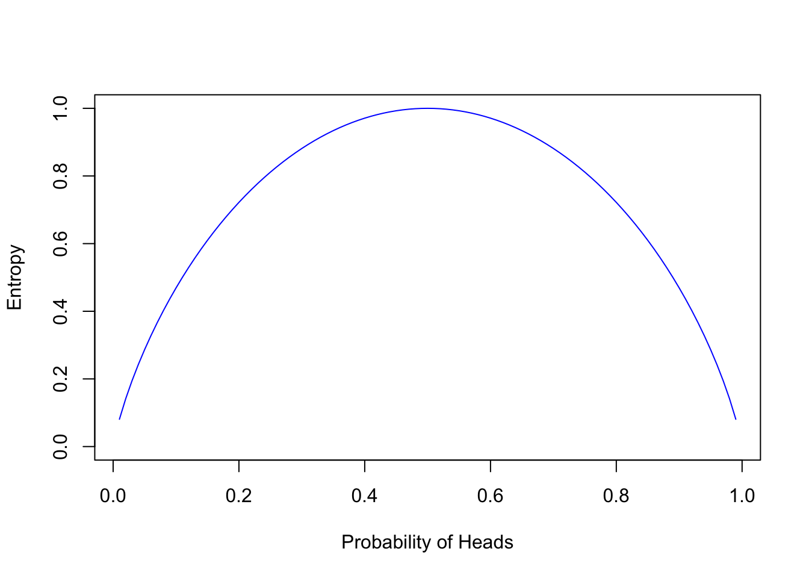
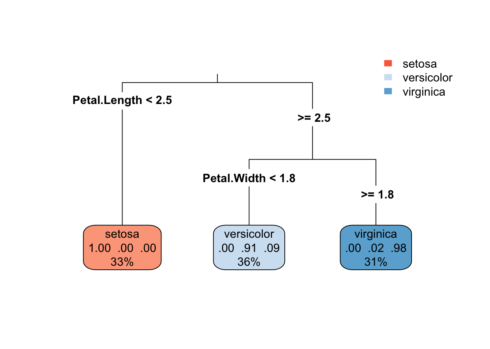

p <- seq(0.01, 0.99, 0.01)
plot(p, 1-p^2-(1-p)^2, type='l', ylim=c(0,1),
ylab = "Gini Impurity", xlab="Probability of Heads",
col="blue")
Decision trees are a fundamental machine learning algorithm that’s easy to understand and interpret. They’re a popular choice for classification and regression tasks, offering a visual representation of the decision-making process. In this series, we’ll explore the inner workings of decision trees, starting with the basics and gradually building up to more advanced concepts.
Why go through the trouble of building a machine learning algorithm by hand, especially when libraries like sklearn in Python or rpart in R are just a function call away? The answer lies in the deeper understanding and insights that come from peeling back the layers of these algorithms ourselves.
Beyond the theoretical, there’s immense practical value in understanding the inner workings of these models. It allows for more informed decisions about feature selection—knowing which to discard because they don’t fit the model’s assumptions and which to transform for better representation. This knowledge often translates to improved model performance on new, unseen data.
And let’s not overlook the sheer joy of the process. Diving deep into algorithms offers a unique way to tackle problem-solving, enhancing our execution and grasp of machine learning concepts.
How do we navigate through the countless ways to split our data? We turn to optimization metrics, the compass guiding each iteration towards better performance. For decision trees, two key metrics stand out: Gini Impurity and Entropy.
Gini Impurity is an insightful metric focused on misclassification. It hinges on the probability of classifying a data point correctly within our dataset. For any given class \(c\) with frequency \(f_c\), we predict that class for a data point \(f_c\) proportion of the time. The error for each class is the chance of selecting the class multiplied by the likelihood of being incorrect:
\[Error_c = f_c \times (1 - f_c)\]
The Gini Impurity is the aggregate of these individual errors across all classes:
\[Gini\ Impurity = \sum_c f_c \times (1 - f_c) = \sum_c f_c - \sum_c f_c^2 = 1 - \sum_c f_c^2\]
Improving the Gini Impurity, specifically by minimizing it across data regions, directly leads to a reduction in misclassification.
Consider the Gini Impurity of a coin flip, where the probability of heads is \(p_H\):
\[Gini\ Impurity = 1 - p_H^2 - (1 - p_H)^2 = 2 \times p_H \times (1 - p_H)\]
p <- seq(0.01, 0.99, 0.01)
plot(p, 1-p^2-(1-p)^2, type='l', ylim=c(0,1),
ylab = "Gini Impurity", xlab="Probability of Heads",
col="blue")
When \(p_H\) is at 0 or 1, there’s no chance of error—our predictions are certain. Yet at \(p_H = 0.5\), Gini Impurity peaks, reflecting the highest error rate and aligning with our intuitive understanding.
Entropy, on the other hand, takes a different tack. It measures the expected information content—or surprise—of a class in a dataset. If \(f_c\) is the proportion of a class, and \(I(c)\) represents the information content of the class, then entropy is defined as:
\[Entropy = \sum_c f_c \times I(c)\]
Without delving too deep into the underlying theory, the formula for entropy, given that \(I(c) = -\log_2(f_c)\), simplifies to:
\[Entropy = -\sum_c f_c \times \log_2(f_c)\]
Though the logarithm base could be arbitrary, we align it with the binary nature of the decision trees we’re examining in this series.
Extending our analogy to the coin toss, let’s examine how entropy changes with varying probabilities of heads, \(p_H\):
\[Entropy = -p_H \log_2(p_H) - (1 - p_H) \log_2(1 - p_H)\]
p <- seq(0.01, 0.99, 0.01)
plot(p, -p*log2(p)-(1-p)*log2(1-p), type='l', ylim=c(0,1),
ylab = "Entropy", xlab="Probability of Heads", col="blue")
Entropy achieves its maximum at \(p_H = 0.5\), where uncertainty—and the potential for error—is greatest. This resonates with the principle that the greatest entropy occurs where prediction is most challenging.
Refining Our Approach with Information Gain
With our metrics in place to judge how well our dataset’s predictions are doing, it’s time to focus on improvement—how can we make our predictions even better? We’re going to talk about something called ‘Information Gain’, a concept which is the difference we want to maximize when deciding how to split our data.
Fine-tuning a Decision Tree for Classification
When we build a classifier—a kind of decision tree—our goal is to organize our data into groups that make our predictions as accurate as possible. The concept of ‘Information Gain’ is a bit like a treasure map; it helps us find these valuable groupings by measuring how much more ordered, or less chaotic, our data becomes after a split.
\[Information\ Gain = Gini\ Impurity_{before\ split} - \sum_{each\ split} \frac{|split\ group|}{|total\ data|} Gini\ Impurity_{split\ group}\]
\[Information\ Gain = Entropy_{before\ split} - \sum_{each\ split} \frac{|split\ group|}{|total\ data|} Entropy_{split\ group}\]
In these equations, \(Gini\ Impurity_{before\ split}\) and \(Entropy_{before\ split}\) represent the disorder in our data before any splits. The sum of the Gini Impurity or Entropy of each split group is weighted by the proportion of data in that group. The Information Gain is the difference between the disorder before the split and the weighted sum of disorder after the split.
In essence, it tells us how much clearer our predictions become after we’ve sorted the data into separate buckets based on certain features.
Balancing Decision Trees to Avoid Overfitting
A common pitfall with decision trees is that they can get a little too enthusiastic, creating very specific rules that work perfectly for the data they were trained on but not so well for new data. This is known as overfitting.
To avoid this, we can trim or ‘prune’ the tree after it’s grown, or we can set some ground rules that stop the tree from getting overly complicated in the first place. These rules can include limits like:
The Iris Dataset: Our Classification Playground We’ll be using the well-loved Iris dataset for classification tasks. The Species attribute will be our target for prediction. Here’s a peek at the dataset:
library(datasets)
data(iris)
head(iris, 6) Sepal.Length Sepal.Width Petal.Length Petal.Width Species
1 5.1 3.5 1.4 0.2 setosa
2 4.9 3.0 1.4 0.2 setosa
3 4.7 3.2 1.3 0.2 setosa
4 4.6 3.1 1.5 0.2 setosa
5 5.0 3.6 1.4 0.2 setosa
6 5.4 3.9 1.7 0.4 setosaBy using the Iris dataset, we can focus on classifying flower species, a perfect starting point for practicing with decision trees.
Building the Classifier: The Search for the First Split In our script, we’re not just taking wild guesses. We’re methodically examining each feature to find the value that offers the best division of our data, aiming to increase Information Gain.
entropy <- function(y) {
if(length(y) == 0) return(0)
p <- table(y) / length(y)
sum(-p * log2(p + 1e-9))
}
gini_impurity <- function(y) {
if(length(y) == 0) return(0)
p <- table(y) / length(y)
1 - sum(p^2)
}Now we can calculate the Information Gain, considering the improvements brought by different partitions in our data. We use a mask—a logical vector indicating if a row belongs to the first or second partition—to guide this process:
information_gain <- function(y, mask, metric_func = entropy) {
# We don't want partitions with no data points
if (sum(mask) == 0 || sum(!mask) == 0) return(0)
metric_func(y) - (sum(mask) / length(mask)) * metric_func(y[mask]) -
(sum(!mask) / length(!mask)) * metric_func(y[!mask])
}Seeking the Best Split Across All Features With our metric functions in hand, we’ll comb through all the features to find the ultimate split:
max_information_gain_split <- function(y, x, metric_func = gini_impurity) {
# Initialize the best change and split value
best_change <- NA
split_value <- NA
# Check if the feature is numeric or categorical
is_numeric <- !(is.factor(x) || is.logical(x) || is.character(x))
for(val in sort(unique(x))) {
mask <- if (is_numeric) { x < val } else { x == val }
change <- information_gain(y, mask, metric_func)
if(is.na(best_change) || change > best_change) {
best_change <- change
split_value <- val
}
}
return(list("best_change" = best_change, "split_value" = split_value, "is_numeric" = is_numeric))
}Now, let’s use this to find the best split for a single feature:
print(max_information_gain_split(iris$Species, iris$Petal.Width))$best_change
[1] 0.3333333
$split_value
[1] 1
$is_numeric
[1] TRUEsapply(iris[, 1:4], function(x) max_information_gain_split(iris$Species, x)) Sepal.Length Sepal.Width Petal.Length Petal.Width
best_change 0.2277603 0.1269234 0.3333333 0.3333333
split_value 5.5 3.4 3 1
is_numeric TRUE TRUE TRUE TRUE After determining the feature and value that provide the most significant information gain, we can then carve our dataset into two distinct sets. Think of it like sorting a deck of cards where one feature is the deciding factor.
best_feature_split <- function(X, y) {
results <- sapply(X, function(x) max_information_gain_split(y, x))
best_name <- names(which.max(results['best_change',]))
best_result <- results[, best_name]
best_result[["name"]] <- best_name
return(best_result)
}Let’s run it for the iris dataset and see which feature provides the best split.
as.data.frame(best_feature_split(iris[, 1:4], iris[, 5])) best_change split_value is_numeric name
1 0.3333333 3 TRUE Petal.LengthThis neat little function sifts through our data and finds the golden split—the point where dividing our dataset yields the most clarity according to our chosen metric.
Now, imagine we’ve found our winning feature. The next step is to partition the iris dataset into two new datasets based on this feature. We’ll refer to them as ‘left’ and ‘right’ datasets, aligning with the branching structure of a tree.
get_best_mask <- function(X, best_feature_list) {
best_mask <- X[, best_feature_list$name] < best_feature_list$split_value
return(best_mask)
}We’ll get the best mask and split the iris dataset accordingly.
best_iris_split <- best_feature_split(iris[, 1:4], iris[, 5])
best_iris_mask <- get_best_mask(iris[, 1:4], best_iris_split)Partition the iris dataset into ‘left’ and ‘right’
left_iris <- iris[best_iris_mask, ]
right_iris <- iris[!best_iris_mask, ]And just like that, with our data now split into ‘left’ and ‘right’, we’ve taken the first step in constructing our decision tree. This process will serve as the foundation for building a data structure that captures the essence of our tree, complete with branches that stem from each decision point.
Now that we’ve laid the groundwork, get ready because we’re about to build our decision tree from scratch. Wish me luck!
calculate_entropy <- function(y) {
if (length(y) == 0) return(0)
p <- table(y) / length(y)
-sum(p * log2(p + 1e-9))
}
calculate_gini_impurity <- function(y) {
if (length(y) == 0) return(0)
p <- table(y) / length(y)
1 - sum(p^2)
}
calculate_information_gain <- function(y, mask, metric_func) {
s1 <- sum(mask)
s2 <- length(mask) - s1
if (s1 == 0 || s2 == 0) return(0)
metric_func(y) - s1 / (s1 + s2) * metric_func(y[mask]) - s2 / (s1 + s2) * metric_func(y[!mask])
}
find_best_split <- function(X, y, metric_func) {
features <- names(X)
best_gain <- 0
best_split <- NULL
best_feature <- NULL
for (feature in features) {
unique_values <- unique(X[[feature]])
for (value in unique_values) {
mask <- X[[feature]] < value
gain <- calculate_information_gain(y, mask, metric_func)
if (gain > best_gain) {
best_gain <- gain
best_split <- value
best_feature <- feature
}
}
}
list(gain = best_gain, feature = best_feature, split = best_split)
}
split_data <- function(X, y, best_split) {
mask <- X[[best_split$feature]] < best_split$split
list(
left_X = X[mask, ],
left_y = y[mask],
right_X = X[!mask, ],
right_y = y[!mask]
)
}
create_decision_tree <- function(X, y, max_depth = 3, depth = 0, metric_func = calculate_gini_impurity) {
if (depth == max_depth || length(unique(y)) == 1) {
return(list(prediction = ifelse(is.factor(y), names(sort(-table(y)))[1], mean(y))))
}
best_split <- find_best_split(X, y, metric_func)
if (best_split$gain == 0) {
return(list(prediction = ifelse(is.factor(y), names(sort(-table(y)))[1], mean(y))))
}
split_sets <- split_data(X, y, best_split)
return(list(
feature = best_split$feature,
split = best_split$split,
left = create_decision_tree(split_sets$left_X, split_sets$left_y, max_depth, depth + 1, metric_func),
right = create_decision_tree(split_sets$right_X, split_sets$right_y, max_depth, depth + 1, metric_func)
))
}
print_decision_tree <- function(node, prefix = "") {
if (!is.null(node$prediction)) {
cat(prefix, "Predict:", node$prediction, "\n")
} else {
cat(prefix, "If", node$feature, "<", node$split, ":\n")
print_decision_tree(node$left, paste0(prefix, " "))
cat(prefix, "Else (", node$feature, ">=", node$split, "):\n")
print_decision_tree(node$right, paste0(prefix, " "))
}
}
iris_tree <- create_decision_tree(iris[, 1:4], iris[, 5], max_depth = 3)
print_decision_tree(iris_tree) If Petal.Length < 3 :
Predict: setosa
Else ( Petal.Length >= 3 ):
If Petal.Width < 1.8 :
If Petal.Length < 5 :
Predict: versicolor
Else ( Petal.Length >= 5 ):
Predict: virginica
Else ( Petal.Width >= 1.8 ):
If Petal.Length < 4.9 :
Predict: virginica
Else ( Petal.Length >= 4.9 ):
Predict: virginica rpartAfter meticulously constructing our decision tree from scratch and gaining insights into its inner workings, it’s illuminating to compare our results with those from the well-established rpart package. This comparison not only validates our approach but also offers perspective on how different methodologies might influence the model’s structure and performance.
rpartTo make this comparison, we first need to construct a decision tree using rpart on the same dataset:
library(rpart)
# Building the decision tree model with rpart
rpart_tree <- rpart(Species ~ ., data = iris, method = "class")Summary of the rpart tree
summary(rpart_tree)Call:
rpart(formula = Species ~ ., data = iris, method = "class")
n= 150
CP nsplit rel error xerror xstd
1 0.50 0 1.00 1.23 0.04705316
2 0.44 1 0.50 0.66 0.06079474
3 0.01 2 0.06 0.09 0.02908608
Variable importance
Petal.Width Petal.Length Sepal.Length Sepal.Width
34 31 21 14
Node number 1: 150 observations, complexity param=0.5
predicted class=setosa expected loss=0.6666667 P(node) =1
class counts: 50 50 50
probabilities: 0.333 0.333 0.333
left son=2 (50 obs) right son=3 (100 obs)
Primary splits:
Petal.Length < 2.45 to the left, improve=50.00000, (0 missing)
Petal.Width < 0.8 to the left, improve=50.00000, (0 missing)
Sepal.Length < 5.45 to the left, improve=34.16405, (0 missing)
Sepal.Width < 3.35 to the right, improve=19.03851, (0 missing)
Surrogate splits:
Petal.Width < 0.8 to the left, agree=1.000, adj=1.00, (0 split)
Sepal.Length < 5.45 to the left, agree=0.920, adj=0.76, (0 split)
Sepal.Width < 3.35 to the right, agree=0.833, adj=0.50, (0 split)
Node number 2: 50 observations
predicted class=setosa expected loss=0 P(node) =0.3333333
class counts: 50 0 0
probabilities: 1.000 0.000 0.000
Node number 3: 100 observations, complexity param=0.44
predicted class=versicolor expected loss=0.5 P(node) =0.6666667
class counts: 0 50 50
probabilities: 0.000 0.500 0.500
left son=6 (54 obs) right son=7 (46 obs)
Primary splits:
Petal.Width < 1.75 to the left, improve=38.969400, (0 missing)
Petal.Length < 4.75 to the left, improve=37.353540, (0 missing)
Sepal.Length < 6.15 to the left, improve=10.686870, (0 missing)
Sepal.Width < 2.45 to the left, improve= 3.555556, (0 missing)
Surrogate splits:
Petal.Length < 4.75 to the left, agree=0.91, adj=0.804, (0 split)
Sepal.Length < 6.15 to the left, agree=0.73, adj=0.413, (0 split)
Sepal.Width < 2.95 to the left, agree=0.67, adj=0.283, (0 split)
Node number 6: 54 observations
predicted class=versicolor expected loss=0.09259259 P(node) =0.36
class counts: 0 49 5
probabilities: 0.000 0.907 0.093
Node number 7: 46 observations
predicted class=virginica expected loss=0.02173913 P(node) =0.3066667
class counts: 0 1 45
probabilities: 0.000 0.022 0.978 This code snippet fits a decision tree to predict the Species from the iris dataset, mimicking the setup of our manually built tree. The summary provides detailed information about the tree’s splits, size, and predictive performance.
Visualizing the tree helps in understanding the decisions it makes. The rpart.plot package offers tools for this purpose:
library(rpart.plot)
rpart.plot(rpart_tree, type = 3, box.palette = "RdBu", extra = 104)
This visualization shows the splits made by the tree, the criteria for each decision, and the distribution of classes at each node. The type, color palette, and extra parameters are adjustable to enhance readability and insight.
With both trees constructed, we can now evaluate their performance on the dataset. This comparison will shed light on the predictive power of each model and how they differ in their decision-making processes.
predict_manual_tree <- function(tree, newdata) {
if (!is.null(tree$prediction)) {
# If it's a leaf node, return the prediction
return(tree$prediction)
} else {
# Determine whether to follow the left or right branch
if (!is.null(tree$split) && newdata[[tree$feature]] < tree$split) {
return(predict_manual_tree(tree$left, newdata))
} else {
return(predict_manual_tree(tree$right, newdata))
}
}
}
predicted_manual <- sapply(1:nrow(iris), function(i) predict_manual_tree(iris_tree, iris[i, ]))
manual_accuracy <- mean(predicted_manual == iris$Species)
# For the rpart tree
predicted_rpart <- predict(rpart_tree, iris, type = "class")
rpart_accuracy <- mean(predicted_rpart == iris$Species)
cat("Manual Tree Accuracy:", manual_accuracy, "\n")Manual Tree Accuracy: 0.9733333 cat("Rpart Tree Accuracy:", rpart_accuracy, "\n")Rpart Tree Accuracy: 0.96 Interesting! Our manually constructed tree had higher accuracy than the rpart tree on the iris dataset. How did that happen? The difference in accuracy could be due to the hyperparameters used, the splitting criterion, or the stopping criteria. It’s a reminder that the choice of algorithm and its parameters can significantly impact the model’s performance.
In this project, we delved into the inner workings of decision trees, building one from scratch and comparing it with the rpart package. We explored the concepts of entropy, information gain, and Gini impurity, which are fundamental to decision tree algorithms. By constructing a decision tree manually, we gained a deeper understanding of how these models make decisions and split the data.
Thank you! I hope you learned as much as I did while working on this post! If you have any questions or feedback, please feel free to reach out. Happy learning!